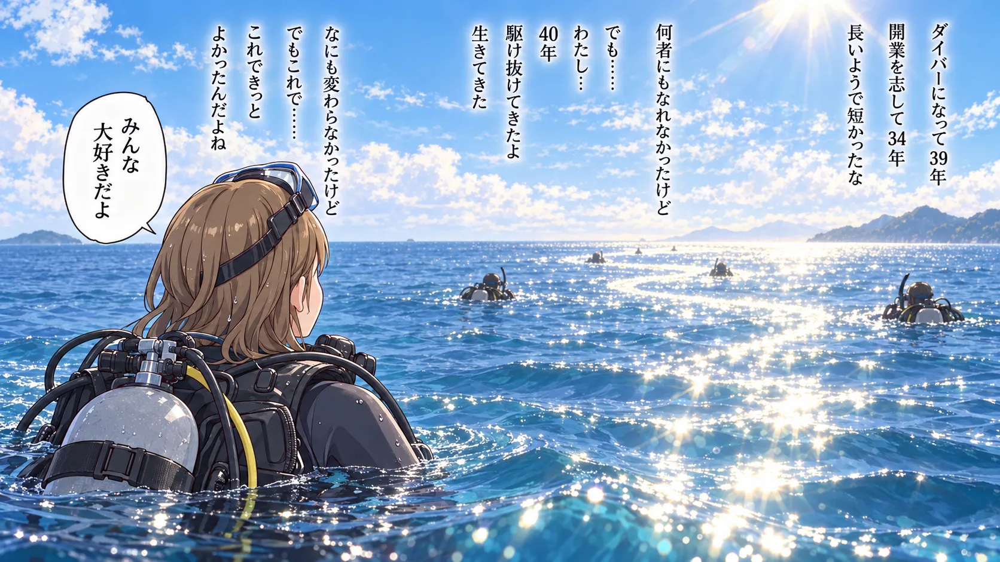

The road Orz passed by 2026 年 09 月
09 月 24 日 ( 木 )
Dive #221 その後のみんなのことと、なんだかんだで全力で駆け抜けてきたなと思ったのと
ぼくが京橋の S2 Club 京橋店でダイブマスターコースを受けてたときの店長が、今は芸能プロダクション代表ってどういうこと？でも東京の会社を人に任せて自分は沖縄で相変わらず NAUI と PADI のインストラクターをやってるとか、面白すぎて爆笑する。
ちなみにこの人がぼくに「今の君だったら NAUI の ITC に通ってしまうだろうけど、まだ教えないと行けないことがある。だからまだダイブマスターに認定できない」って言った人。
今なら、いや、ぼくにいろいろ教えてくれたのはジュンちゃんと戸田っちで、あなたは何もぼくに教えてくれてませんよ？って言ってしまうかも (笑)。もちろんジュンちゃんや戸田っちから報告は聞いて方針決定とかはしてたんだろうけど。
みなべのダイビングサービスで、ずっと FPS のビデオゲームをやってた、この人にはそんな記憶が残ってる。海の中ではたしかに別人だったけど。
でもやっぱり一緒にはほとんど潜ってないっていうのは大きい。カードにサインは入っていても一緒に潜ってないことが多かった。一緒に過ごす時間があまりないことから、やはりぼくのロールモデルとみなすのは難しかった。
これ見たらぽってり太っちゃって。いやぼくも今はデブのジジイだけどさ (笑)
でもお元気そうでなによりだ。
ぼくを担当してくれてたのはジュンちゃんだけど、もうひとりの担当者の戸田っちは NAUI はやめてしまって今は PADI 1 本でやってる。
今は久米島の JiC 久米島 ( https://kume-jic.com/ ) の社長さんだ。
ジュンちゃんは S2 Club から本当に姿を消してしまって、その後はわからない。PADI のシステムで検索しても出てこないし、NAUI のシステムでも出てこない。少なくとも PADI も NAUI もインストラクターの更新はどこかでやめたのかもしれない。
あまり話す機会のなかった元ダイビングショップオーナーの小林さんも去就は不明。
S2 Club 時代の誰かに会いたいってなるとジュンちゃんと戸田っちだけど、戸田っちはブルーマリンフェスでぼくの目の前にいたけれど、ぼくのことを覚えてなかったし、もういいかな、直に顔を見れたし満足かなって感じ。
だって彼には彼の人生がすでにあるし、たまたままたでくわして「お久しぶり」って言えればいいけど、そこまではもう必要ないし、そもそも多分それはもうない。
もしどこかでジュンちゃんと偶然ばったり会って、ぼくのことを覚えていたら「久しぶり。元気してた？今何してんの？昔はごめんね。でもありがとうね。あの頃の S2 Club では一番感謝してる」って言葉を交わすだけでそのまま分かれると思う。そしてもうたぶん会うこともない。
なんかみんながそれぞれの道で生きているのがわかったらそれでいいかな、なんて思う。まぁわかる必要も無いんだけれど。
そして去年、今年と師匠と会ったけど、これからどうなるのかはわからない。師匠もさすがにぼくのことをあまり覚えていないし。
ぼくが潜れなくなってしまって 23 年。師匠と会えなくなって 23 年。師匠もぼくの人生とは別の流れの中で生きてきてる。
そりゃぁぼくのことなんて大昔の話だもんね。師匠から見たらもうぼくは別の世界の赤の他人だもの。
それでも相変わらず、まるで弟かのように接してくれるけど。
でも師匠から見て、ぼくと合う合わないでいうと、合わないんだろうな。それを無理やり師匠が合わす必要も無いし。師匠はぼくにとって特別だからとても寂しいけど。
でも 23 年だもんね。仕方ないよね。

なんだか去年の５月から駆け足で２０年以上分の時間を圧縮して、まるで人生のエピローグみたいに体験したような気がする。
NAUI ITC を受けた 1994 年から 32 年かぁ。ダイビングを始めた 1987 年からだと 39 年だ。でも長いようで短かったな。
21 年の中断期間はあったけれど、去年５月から始まったあれこれで、40 年間うまくは行かなかったけれど、なんか 40 年近く必死で駆け抜けてきたんだな、っていうことだけは了解できる。
まぁ今でも走ってるんだけど。遺すことがまだたくさんあるしね。
まだ終われない。
- Category :
- #Records of Orz's Road
- #ダイビング
- #スクーバダイビング
- #40年